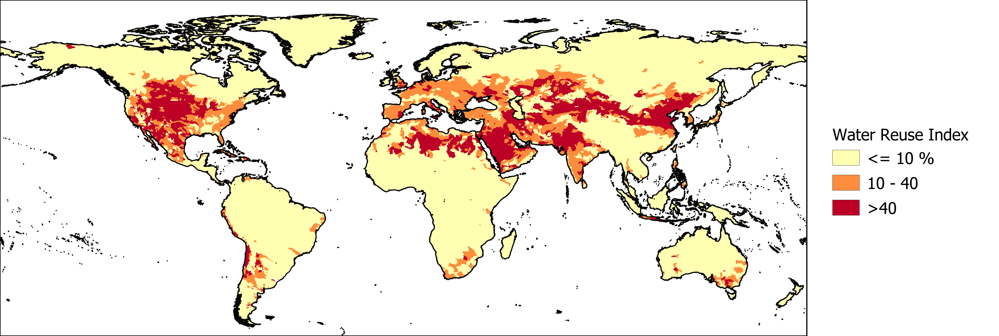

The Water Reuse Index is used as an indicator of surface water quality. Surface water quality can affect groundwater quality when significant amounts of contaminated surface water infiltrate and reach the groundwater. The Water Reuse Index is calculated by dividing the upstream non-consumptive water use by the available river discharge in an average year. Therefore, it represents how much of the available river discharge in an area consists of wastewater from upstream areas. When the value of the indicator is high, the area is more dependent on water treatment facilities to ensure adequate water quality than when the value is low. The return flow ratio was obtained from the Aqueduct Water Risk Atlas.

The Water Reuse Index, relating upstream water use to local water availability, classified into low (yellow), medium and high (red) risk categories.
Reference:
Gassert, F., Landis, M., Luck, M., Reig, P., & Shiao, T. (2013). “Aqueduct global maps 2.0.” Working Paper. Washington, DC: World Resources Institure. Available online at /publication/aqueduct-global-maps-20.